5.6 Visualization
R is incredibly useful for creating visualizations and graphics which are easy to customize and automate, and entire university courses are dedicated to creating visualizations with R. Here we will only introduce the basics of creating visualizations in R.
ggplot2 package, which has a very different way of constructing visualizations that could be confusing if included here.
R can make several different types of plots, and the type of plot will depend on what kind of data you are dealing with. Below, we’ll explore common types of plots for various types of data.
5.6.1 One Quantitative Variable
One of the most popular ways of visualizing quantitative variables is with a histogram, where each bar represents the observations falling within a specific range.
The height of each bar reflects how many observations fall within that range.
In the Olympic athletes data, Height is a quantitative variable, so let’s create a histogram using the hist function:
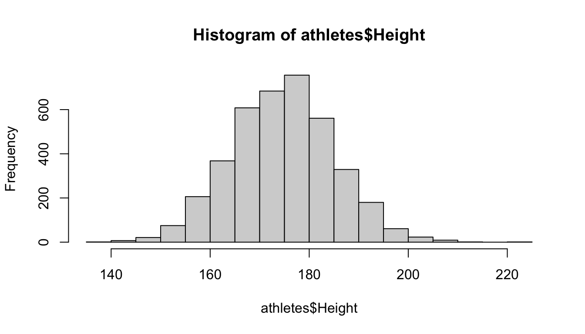
This histogram shows that most heights are between roughly 160 and 190 centimeters, and the distribution looks unimodal.
Notice that R has decided how many bins (bars) to use, but this can be changed with the breaks option:
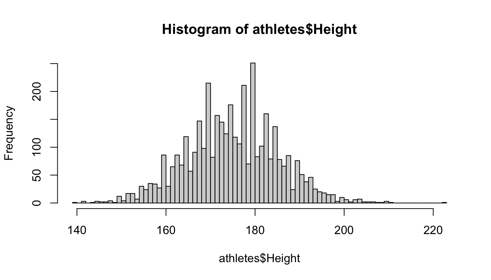
R will “try” to create the number of bins equal to breaks, but sometimes won’t make exactly that number.
Instead of just giving a single number breaks, you could also give a vector of numbers, which specify the start and stop points of the bins:
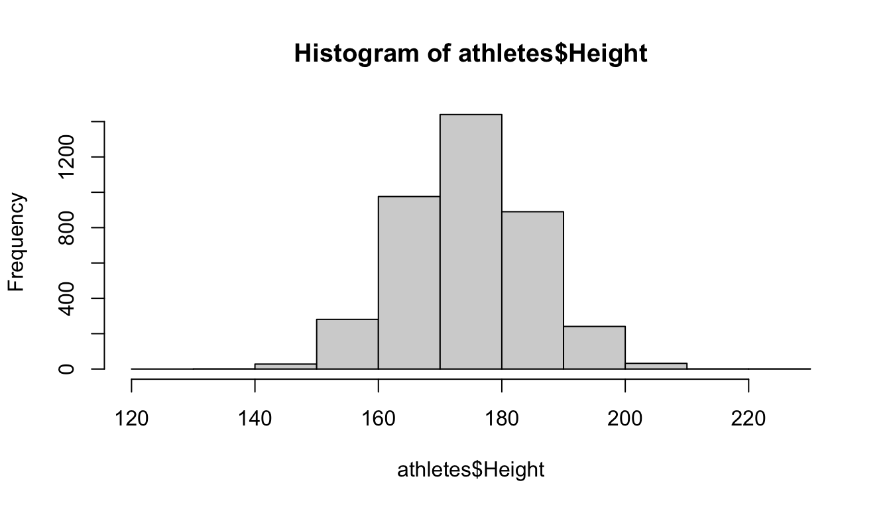
By default, R adds a title and axis labels to the plot, but for presentation purposes, it’s probably a good idea to change them.
This can be done with the main, xlab, and ylab options:
hist(athletes$Height, breaks = 60, main = "Olympic Athlete Heights",
xlab = "Height (cm)", ylab = "")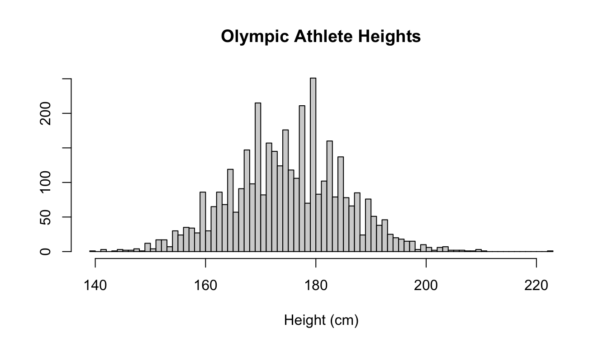 These arguments work with many plot types in R. In this example, we removed the y label by setting it to be an empty string.
Using the clean athletes data, make a histogram of height for athletes whose sport is Basketball. Hint: It might be easiest to create a new data frame with only basketball players first. Give it an appropriate title and axis labels.
hist function, run ?hist.
Another way to summarize a quantitative variable is with a boxplot, which shows a box whose boundaries are the first and third quartiles. Inside the box, a line denotes the median, and the “whiskers” outside the box show which points are outliers (those outside the whiskers).
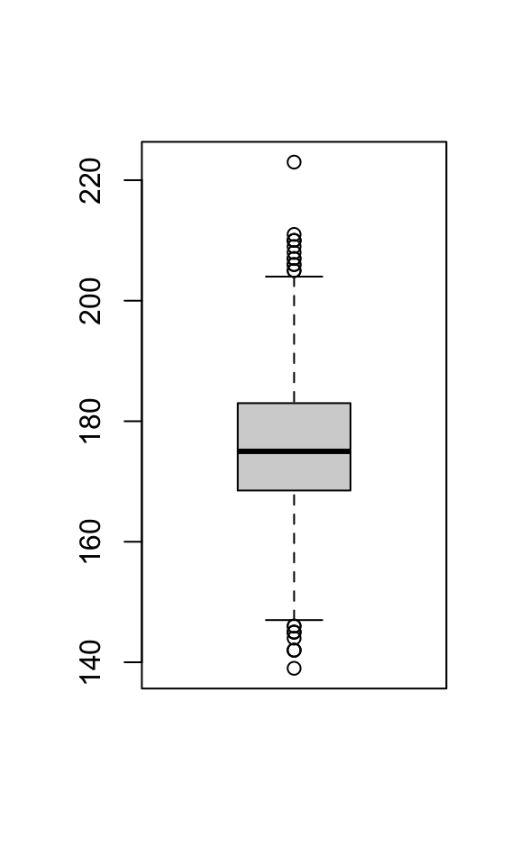 In this case, there are no default title or labels, but we can still add them:
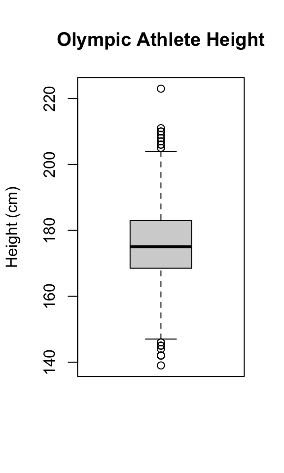
Hint: In RMarkdown, boxplots may look too wide by default. You can control the width of a figure by using the fig.height and fig.width commands in the chunk header like this:
```{r, fig.height=3, fit.width=5}
The boxplot function also allows you to split up a quantitative variable using another variable, using the tilde (~).
Here are some examples:
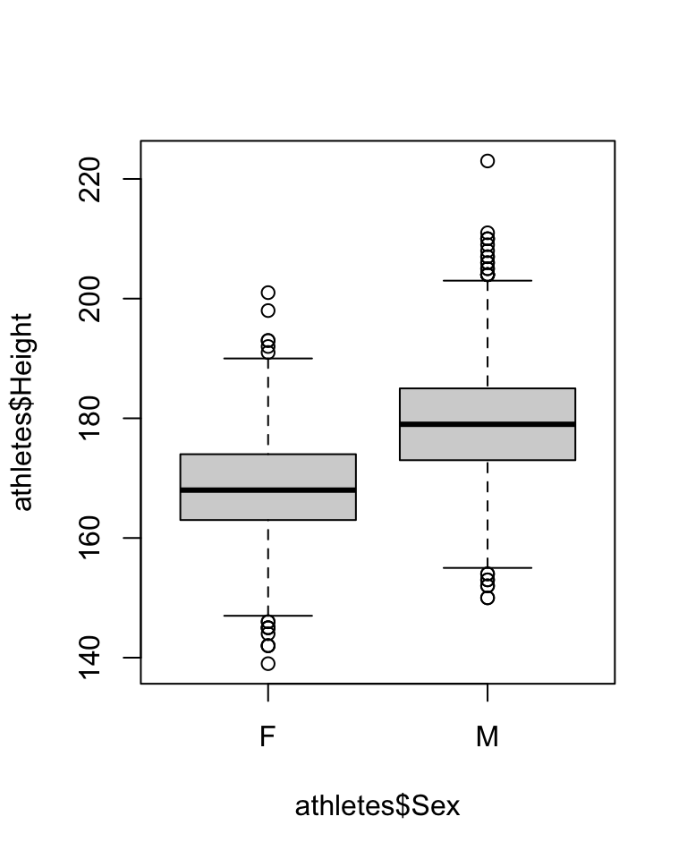
par(mar = c(11, 4, 4, 2) + 0.1) # Command to make the labels fit
boxplot(athletes$Height ~ athletes$Sport, las = 2, xlab = "") # Make a boxplot of height, split by sport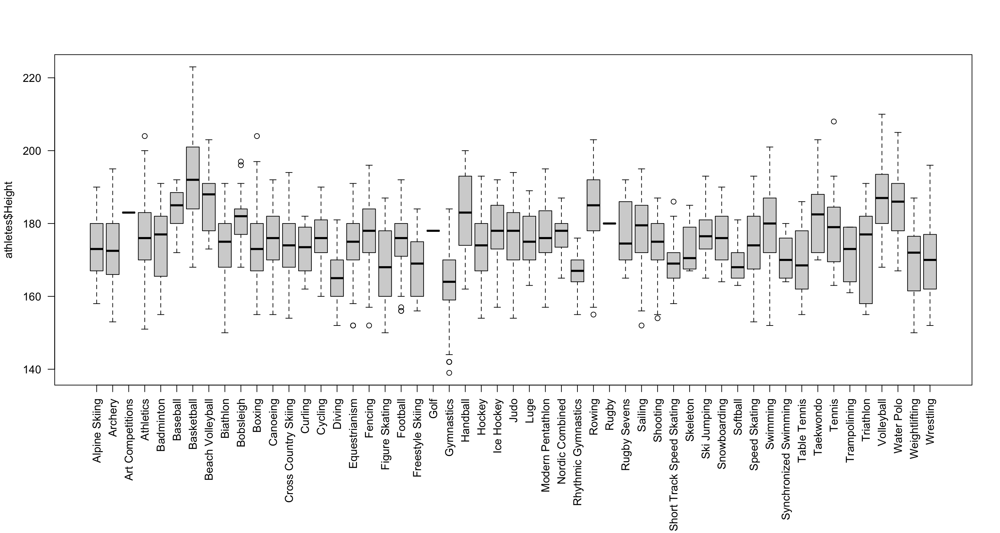
Here we’ve added a few more bits to fit all the sport labels in: the las option rotates the labels, and the par function is used to increase the bottom margin below the graph.
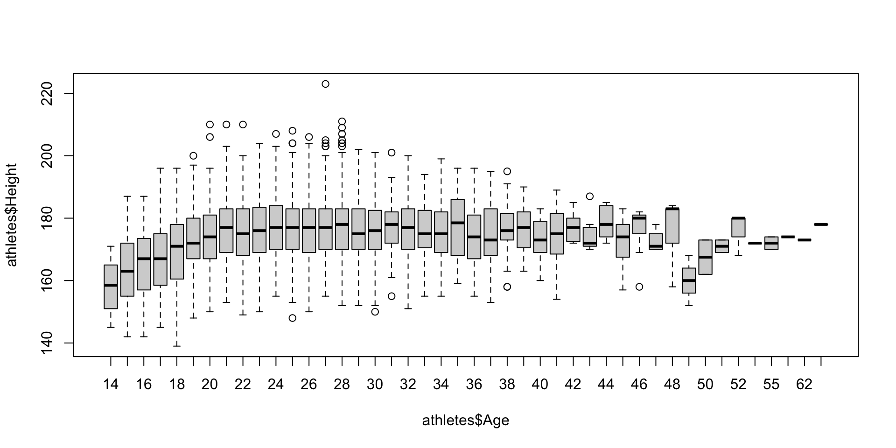
Different software will use different rules to determine how far out the “whiskers” go (and therefore which points are outliers). The default in R is 1.5 times the interquartile range, but this can be changed. When you view a boxplot, never assume what rule was used!
Using the clean athletes data, make boxplots of Height for athletes
whose Sport is “Cycling”, separated by Medal. Give it an appropriate
title and axis labels. Comment on the differences in Height between the
different categories. How many Cyclists have no height reported (that
is, how many have NA for Height) and how many athletes have
a height? How should this affect your interpretation of the
boxplots?
5.6.2 Two Quantitative Variables
The most straightforward way to visualize two quantitative variables is with a scatter plot.
In R, this is created with the plot function.
Let’s look at the relationship between height and weight in the Olympic athletes data, but only for a few sports.
# Select only some sports
gy_bb_wr <- athletes[athletes$Sport %in% c("Gymnastics", "Basketball", "Wrestling"),]
plot(gy_bb_wr$Height, gy_bb_wr$Weight) # Plot height vs weight
Above we saw another nice way to index: the %in%
command. This returns a logical vector which is true for elements that
are found in the search list.
There are a lot of points, so it may be useful to decrease the size of the circles using the cex option, which has a default value of 1:
 Another option would be to change the type of marker, which can be selected using the
Another option would be to change the type of marker, which can be selected using the pch option.
We’ll choose a smaller, solid circle, which is marker number 20:
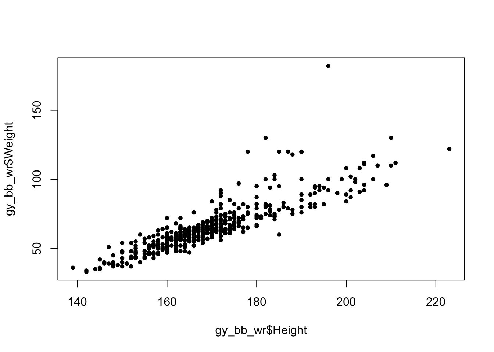
We can also set the color using the col argument.
There are multiple ways to specify a color, but we’ll use the rgb function, which allows us to specify how much red, green, and blue the color has.
color <- rgb(0.5, 0, 1)
plot(gy_bb_wr$Height, gy_bb_wr$Weight, pch = 20, col = color) # Change color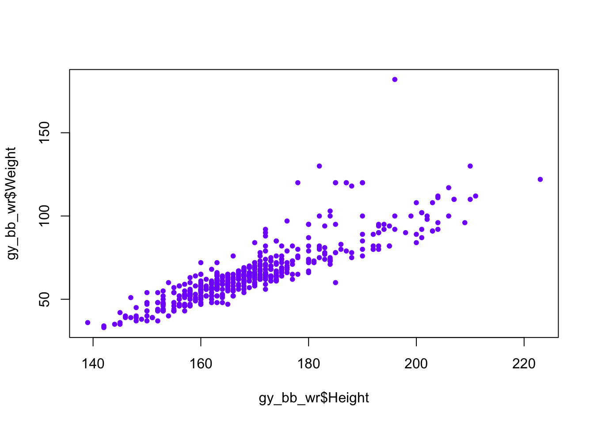
Lastly, we can also make the points less visible, so it’s easier to see when they are overlapping one another. This is done when defining the color, by giving a fourth value called the alpha, which represents how visible a point is. An alpha value of 0 is invisible, and a value of 1 is fully visible.
color <- rgb(0.5, 0, 1, 0.1) # Set the alpha level low, so points are transparent
plot(gy_bb_wr$Height, gy_bb_wr$Weight, pch = 20, col = color) # Make points partially transparent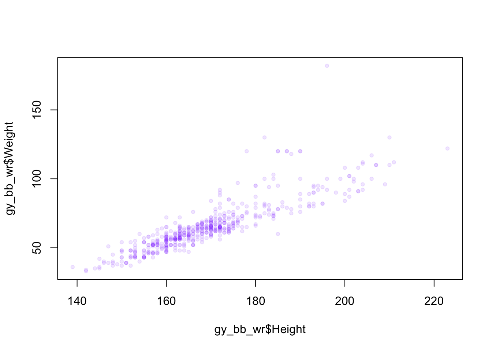 We can also color by sport, by converting the Sport column to a factor, then giving that as the color argument:
colors <- as.factor(gy_bb_wr$Sport)
plot(gy_bb_wr$Height, gy_bb_wr$Weight, pch = 20, col = colors) # Color by sport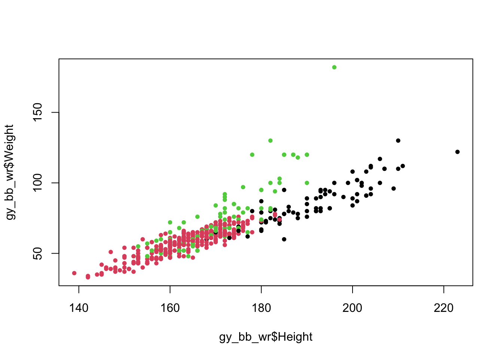
We convert Sport to a factor because the col option in
plot is expecting either a single color (as in the first example) or a
vector of numbers indicating which color should be used for each point
(remember, factors are represented as numbers). The numbers tell R which
color in its palette it should use (for the default palette, 1=black,
2=reddish, 3=greenish, etc.), so factor level 1 (Basketball) is colored
black, level 2 (Gymnastics) is colored reddish, and level 3 (Wrestling)
is colored greenish.
The default colors in R are sometimes not very appealing, so we can define our own color palette:
palette(c(rgb(1, 0, 0, 0.1), rgb(0, 1, 0, 0.1), rgb(0, 0, 1, 0.1))) # Create color palette
plot(gy_bb_wr$Height, gy_bb_wr$Weight, pch = 20, col = colors)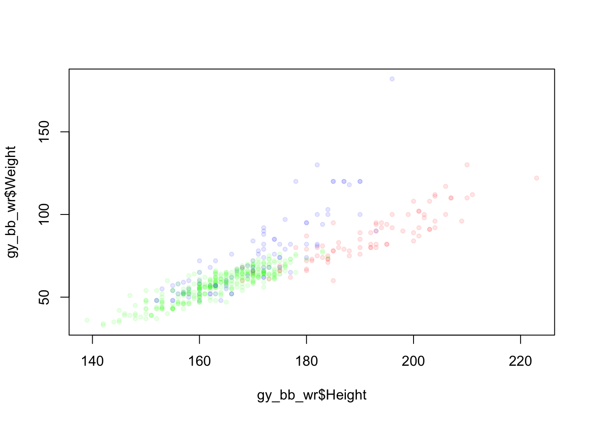
In some cases, it might be appropriate to use lines instead of points.
This can be done by setting the type option to “l”:
You can use points and lines at the same time using “b”:
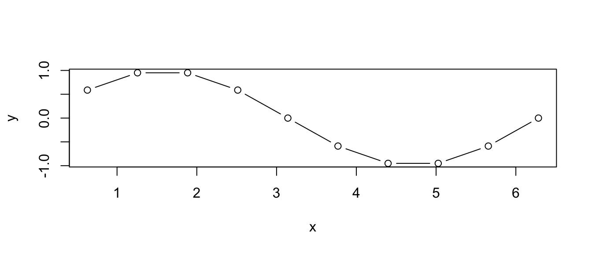
Another option for plotting two quantitative variables, especially when there are many overlapping points, is the smooth scatter:
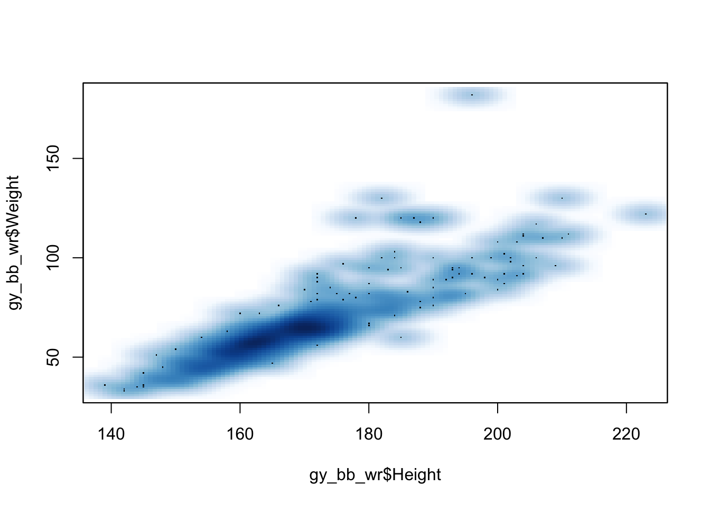
Create a scatter plot of athlete height (y axis) vs. year (x axis) for athletes with Sport “Weightlifting”, and color the points by Sex. Create an appropriate title and axis titles. What was the first year to allow Female Weightlifters?
5.6.3 One Categorical Variable
One useful way to visualize categorical variables is barplots. Before creating a barplot, we need to create a summary table of the variable of interest:
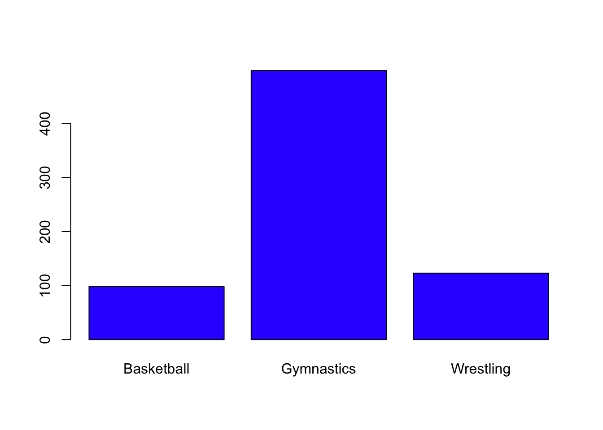
Create a barplot for the Season variable, with an appropriate title and axis labels. Which Season has more rows in the data frame?
5.6.4 Two Categorical Variables
With two categorical variables, you can create a mosaicplot, where the size of each region is relative to the number of observations in that group.
mosaicplot(gy_bb_wr$Sport ~ gy_bb_wr$Sex, col = c("blue", "orange"),
main = "Athlete Sex by Sport", xlab = "Sport", ylab = "Sex")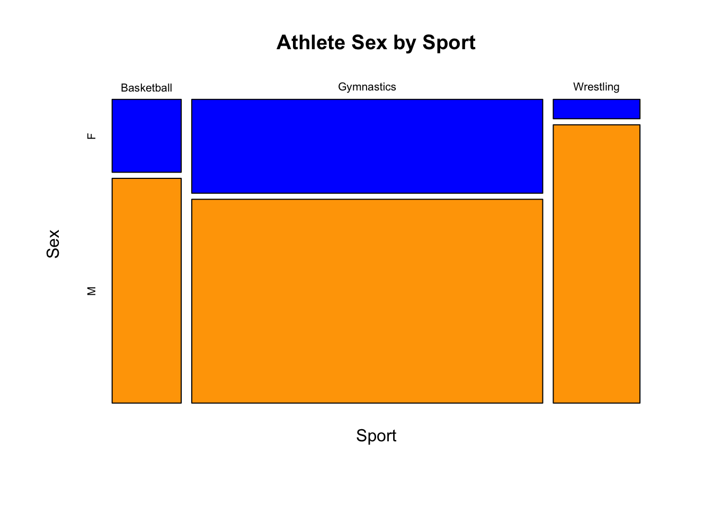
5.6.5 Multiple plots
One nice feature of R’s plotting capability is that you can plot multiple things at the same time.
One way to do this is to create a plot and then add another plot on top of it, using either the points or lines function.
points will add a scatter plot using points/dots, and lines will add a scatter plot using a line.
Normally, a plotting function like plot or hist will create a new plot figure, erasing what may have been plotted before.
But with the points and lines functions, R just adds to the existing figure.
Here’s an example of each:
plot(x, y2,) # Plot x against y2
points(x, y1, col = "blue") # Add points of x against y1 (on same figure)
lines(x, -y1, col = "red") # Add lines of x against -y1 (on same figure)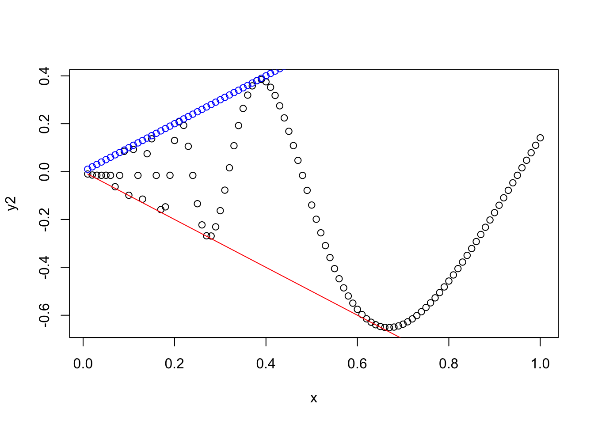
5.6.6 Other types of plots
The following plots that are less common, but may be useful for you, and this is an opportunity to show some other capabilities of R!
5.6.6.1 Scatterplot Matrix
Given several quantitative variables, there are many different possible scatterplots you could make.
The pairs function takes in a matrix or data frame and creates a matrix of all possible scatter plots.
Here’s an example using the iris data set which is included in R:
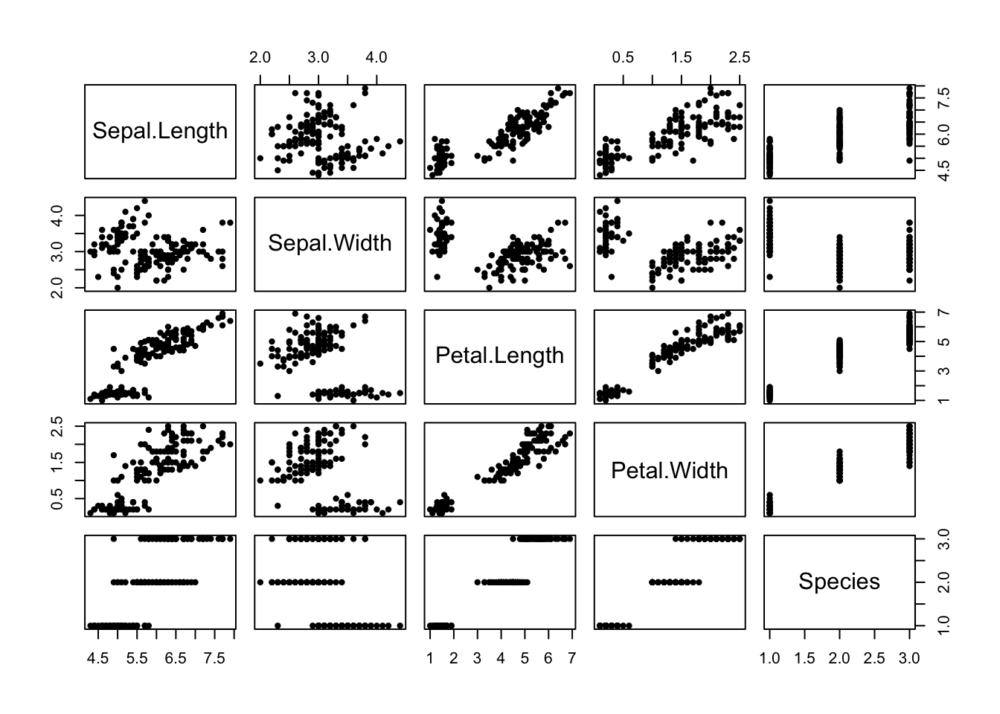 To know the x axis for one of these plots, look up/down to the diagonal, which will tell you the variable on the x axis. To know the y axis for one of these plots, look left/right to the diagonal, which will tell you the variable on the y axis.
5.6.6.2 Surfaces
If you need to plot a surface, there are a few options for visualization.
The first is contour, which shows level curves of the surface in a 2d plane:
# Make a surface using the rep function
n <- 100
x <- rep(1:n, n) / n * 2 * pi
y <- rep(1:n, each = n) / n * 2 * pi
z <- matrix(sin(x) + cos(y), n, n)
contour(z, nlevels = 20)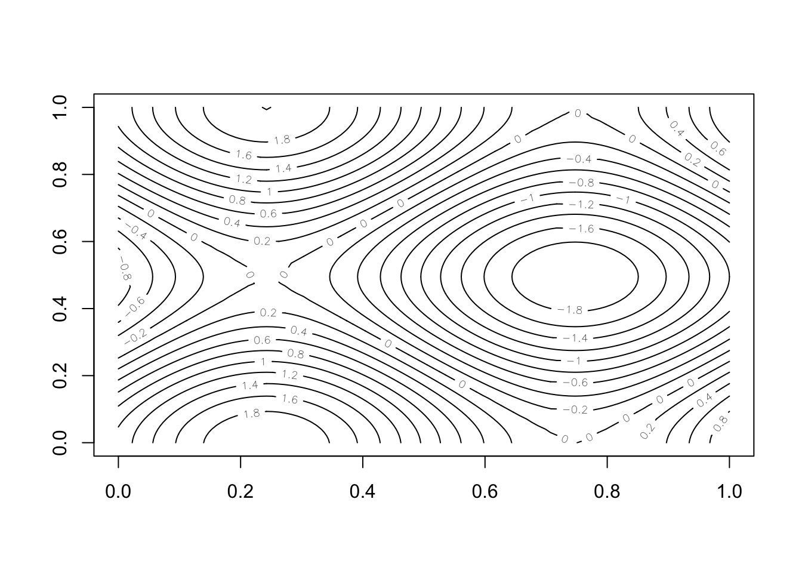
The second option is persp, which gives a 3d perspective of the surface:
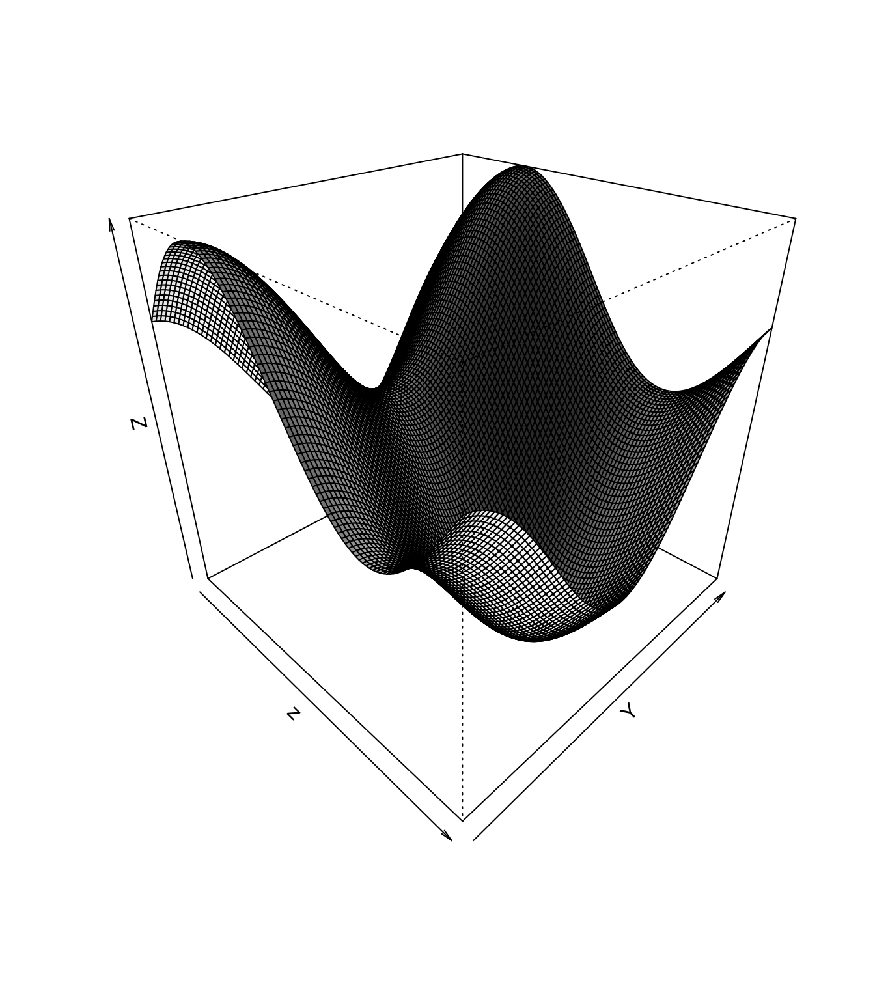
5.6.7 Saving Images
Creating visualizations in R wouldn’t be very useful if there were no way to save them onto your hard drive (or SSD). Thankfully, R provides various ways of doing this, depending on where the plot “lives”. We’ll talk through each of these below.
5.6.7.1 RCode
The most universal way to save plots is to use R code itself! This will work anywhere that R code can be run, whether that’s the RStudio console, an R script, or an RMarkdown document.
All you have to do is type a few simple commands.
The idea is, that normally R “sends” a plot to the plotting window (in the lower right of RStudio), or to the output of a code chunk (if you’re using RMarkdown), but to save the file, you just have to change where R is sending the plot.
For example, if you add put the png function before a plotting command, then instead of sending the plot to wherever it normally does, R will send the plot into the png file you specify.
Here’s an example:
png("output/test_plot.png") # Start "sending" plots to the png file called "test_plot.png"
plot(y1, y2) # This plot will go to "test_plot.png"
dev.off() # Stop sending plots to "test_plot.png"quartz_off_screen
2 After you’re done sending plots to a file, use the command dev.off() to reset where R is sending the plots.
png function creates a new graphics device which is a file on your computer.
The dev.off() shuts down the current graphics device, so no more plots are sent to the file.
You can check out other dev. functions by running `?dev.off().
There are other commands like png as well, including bmp for bitmap images, and jpeg for jpeg images.
When you’re sending a plot to a file, it will not display in the plot window.
5.6.7.2 RStudio Plot Window
If you run code to generate a plot from the console or an R script, then the plot will show up in the RStudio plot window. To save a figure displayed in the plot window, use the “Export” button in the plot window menu.
5.6.7.3 RMarkdown
If you’re plotting inside of an RMarkdown document, then plots will be shown inside your document. One way to get them “out of RStudio” is simply to knit the document. But if you want the plot by itself, then right click on the plot and select “Save image as”.
Choose a plot that you previously created, and write code to save the plot to a png file in the “output” directory of your RStudio project. Choose an appropriate filename for the file.
5.6.8 Plotting Wrap Up
These examples of plotting are only scratching the surface.
There are many more things possible with base R graphics, not to mention the numerous other capabilities provided by community developed Packages.
Before ending this section, we’ll leave you with an example from the ggplot2 package, just to give you a taste of what’s possible.
library(ggplot2)
ggplot(gy_bb_wr, aes(Height, Weight, color=Sex)) +
geom_point(alpha = 0.2) +
theme_bw() +
labs(title = "Athlete Height vs. Weight") +
facet_grid(Sex~Sport)Warning: Removed 199 rows containing missing values or values outside the scale range
(`geom_point()`).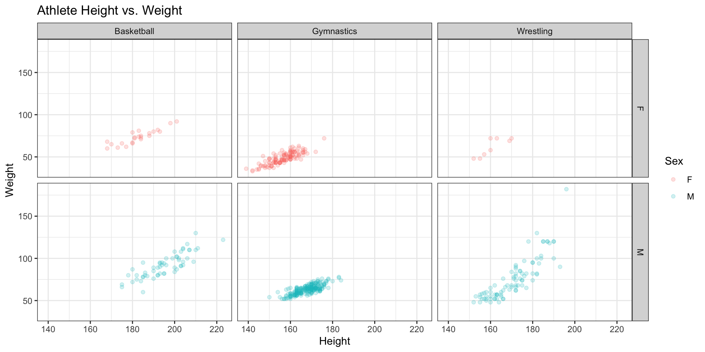
Any feedback for this section? Click here